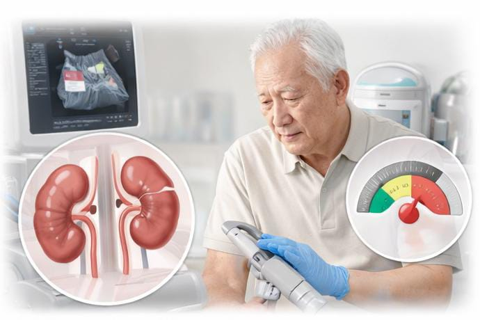
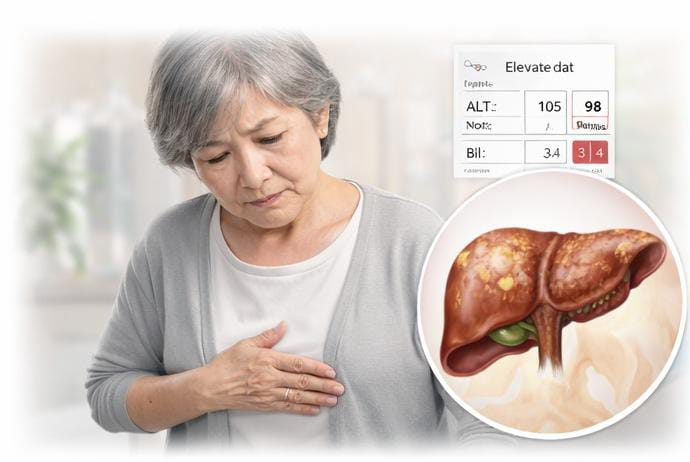
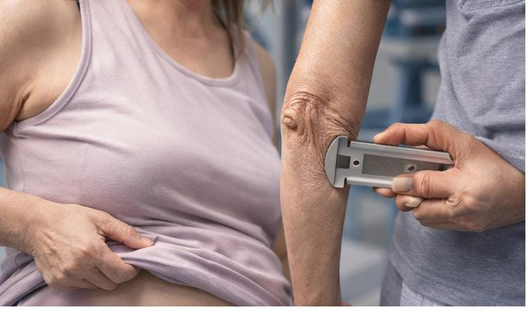
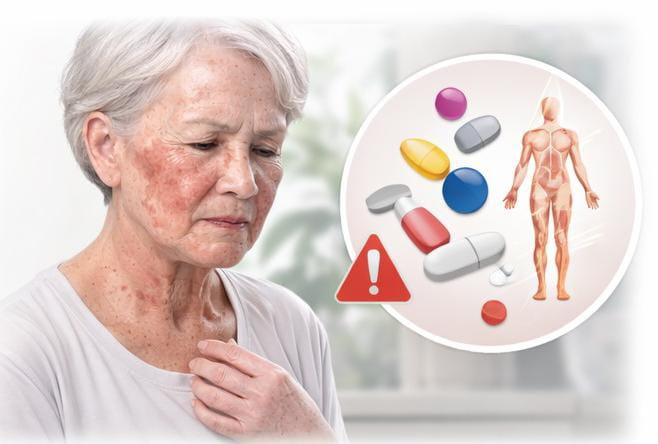
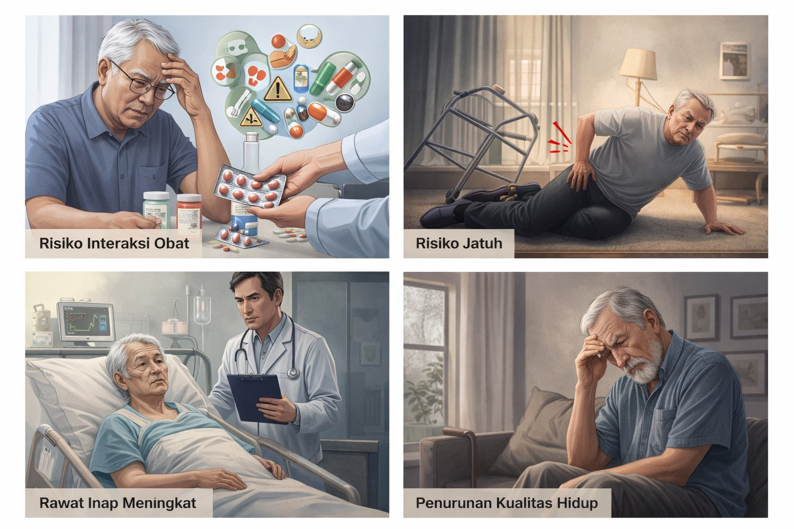

Karakteristik Lansia
Lansia (≥60 tahun) mengalami perubahan fisiologis yang membuat mereka lebih rentan terhadap efek samping obat, termasuk obat antihipertensi seperti ACE inhibitor.

Penurunan Fungsi Ginjal
Obat dan zat sisa keluar lebih lambat, sehingga risiko efek samping meningkat.

Penurunan Fungsi Hati
Obat diubah menjadi bentuk aktif lebih lambat, sehingga efek obat bisa lebih kuat atau lebih lama.

Perubahan Komposisi Tubuh
Lemak meningkat, otot menurun

Peningkatan Sensitivitas
Obat, terutama tekanan darah, bisa bekerja lebih kuat : dosis biasanya mulai rendah dan ditingkatkan perlahan.
Polifarmasi Pada Lansia
Polifarmasi adalah penggunaan ≥5 obat secara bersamaan. Pendekatan yang dapat dilakukan adalah deprescribing (evaluasi dan penghentian obat yang tidak diperlukan).
Faktor Penyebab:
Multimorbiditas
Memiliki beberapa penyakit kronis sekaligus.
Banyak Dokter
Beberapa dokter pemberi resep yang berbeda.
Obat Bebas
Sering mengonsumsi obat tanpa resep atau herbal.
Tanpa Evaluasi
Tidak ada evaluasi obat berkala oleh nakes.

Dampak Polifarmasi:
- Risiko interaksi obat meningkat
- Risiko jatuh pada lansia tinggi
- Tingkat rawat inap di rumah sakit meningkat
- Penurunan kualitas hidup pasien